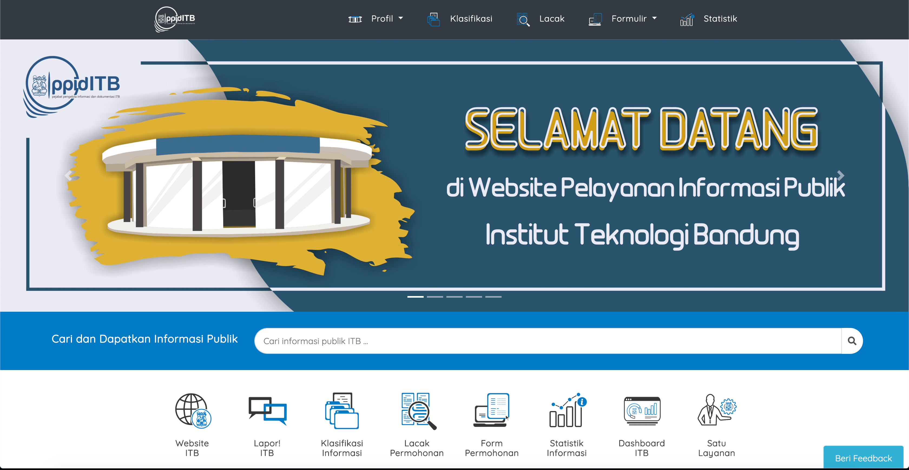
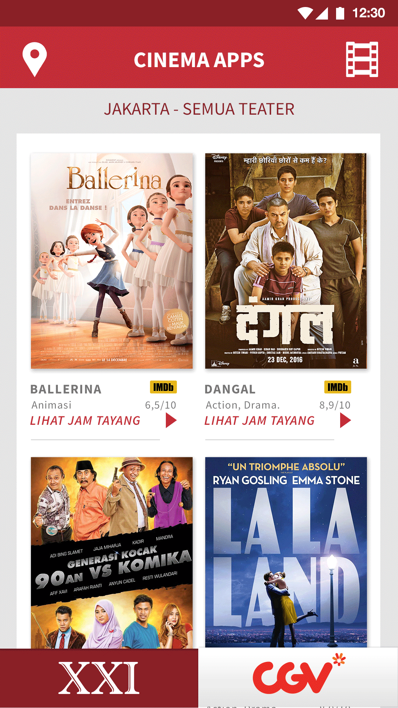
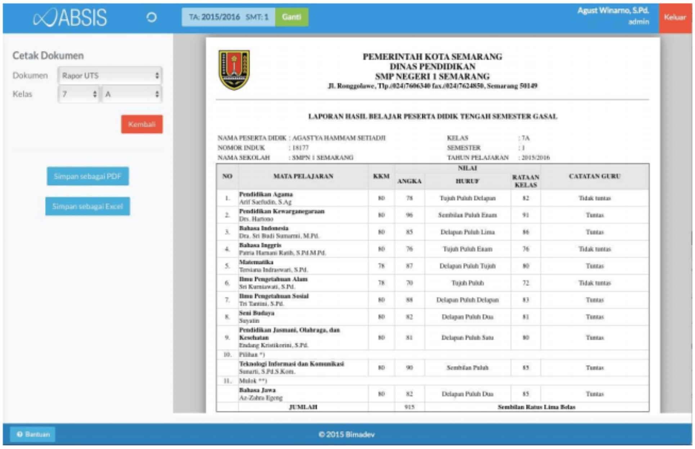
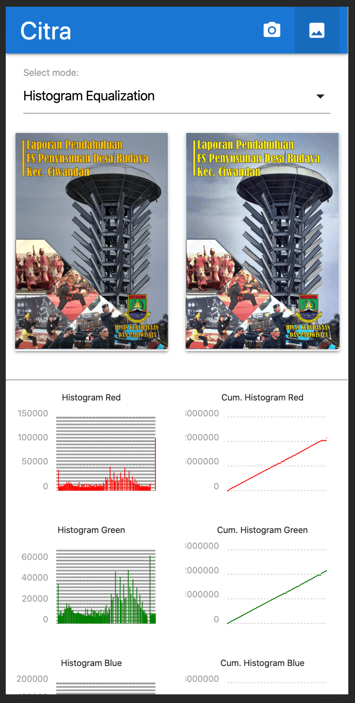

Projects
Projects
Selected Projects

Extended SSDSim
Modified SSDSim so it can handle RAID simulation with multiple SSD devices, implemented GC Scheduling mechanism for RAID simulation, created various scripts to process the data generated from the simulation.Source code: https://github.com/fadhilkurnia/ssdsim
Tech stack: C, Python, Bash
Chollet: Web API Logging Systems
Logging systems for multiple AI microservices, built for AI Scientist in Bukalapak R&DTech stack: Go, Python, Kafka, Docker, MongoDB
GoSSD (Still in progress)
New SSD Simulator for educational purpose, written in Go.Other Projects

ITB Information Center Website
Main website for ITB Information Center (PPID), user can submit information request and track it's progress. You can access it in www.ppid.itb.ac.idTech Stack: Laravel, MySQL

ITB Information Center Application
ITB Information Center (PPID) Application to receive user information request and also show most recent news about ITB. Deployed in Play Store (link).Tech Stack: Ionic

Sinau, Android App
Application to find various tutor nearby, submitted to Gemastik'10 competition. Finish in semi final.Tech Stack: Java, Firebase Realtime DB

Cinema Apps, Android App (Project in Suitmedia)
An application to display showing film in cinema and it's schedule, consume data from Web API and display the result.Tech Stack: Java, Realm, Retrofit, Butterknife

SIKAD, Android App (Project in Suitmedia)
Application for student to see their score and other data. Doing bugfixing and performance improvement.Tech Stack: Java, Realm, Retrofit, Butterknife

Indonesian Basketball League, Android App (Project in Suitmedia)
App to read news from IBL, see match schedule, player lineup, and match result. Implement the new dark design in a month. Deployed in Play Store (link).Tech Stack: Java, Realm, Volley, Butterknife

Torabika Soccer Championship Match Center, Android App (Project in Suitmedia)
Android app for Indonesian soccer fans, the user can see news, player lineup, and match schedule. Code the app based on client specification. The app is used in 2016-2017.Tech Stack: Java, Realm, Volley, Butterknife

Absis, School Information System
Web based school information system, developed for SMPN 1 Semarang, and then we open-sourced the code. You can access the code in Github (link).Tech Stack: PHP, MySQL
Faster System
Point of Sales (PoS) system using RFID technology. All the customer's groceries can be calculated in less than a second. Presented this project in Informatix Competition in Romania, awarded with Gold Medal in software category.Tech stack: VB, MS Access
H-Touch
Android app for visually impaired people, we organize the buttons to be similar as dot in braille characters. Tested with Sahabat Mata Community in Semarang. Presented this project and get Gold Medal in 2014 Indonesian Science Project Olympiad (ISPO), computer category.Tech stack: Java
Class Projects
These are some of projects assignment I did during my undergraduate in ITB:

Tiketo
Simple CLI based ticketing program, created with Pascal.Course: IF1210-Programming Fundamental

Alumni Salman Apps
An Android application for Masjid Salman ITB. We did all the development process from requirement gathering until product delivery.Course: IF3250-Software Project

Citra
Simple web app to do simple image processing, such as Histogram equalization, Histogram match (specification), Character detection using chain code, and Thinning using Zhang Suen. Github repo: (link).Course: IF4073-Image Processing